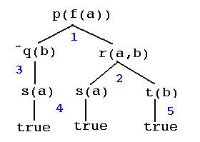
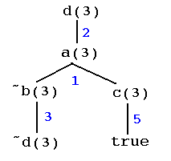
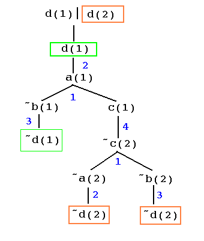
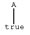
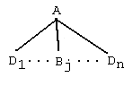
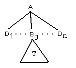
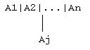

A1 | A2 | ... | Am :- B1, B2, ... Bn .where each Ai and each Bj are positive predicate terms and where m,n >= 0, but not both m = 0 and n = 0. A positive predicate term is one like p(X,Y), whereas the predicate expression ~p(X,Y) is considered as negative.
In a manner consistent with the translation from wffs to normal clauses of the previous section, such a normal clause is intended to say that either A1 or A2or ... Am is the case provided that each of B1 and B2 and ... and Bn is the case.
When m = 0 (and consequently n >= 1) the convention will be to write the normal clause in the "denial" form
false :- B1, B2, ... Bn .where false is a special reserved term that can only be used in this context. When n = 0 (and consequently m >= 1) the convention will be to write the normal rule in the "state" form
A1 | A2 | ... | Am .The "denial" form is intended to say that B1, B2, ..., Bn cannot all be true together. The "state" form is intended to say that at least one of A1, A2, ..., Am is true.
As with Prolog clauses, a normal clause has a head (to left of ':-') and a body (to the right of ':-'). The special false head is equivalent to an empty clause head.
A normal rulebase is a finite collection of normal rules. It is common to also refer to a rulebase as a (logic) program.
A Prolog program is a special case of a normal rulebase: For Prolog, the head of each clause must have only one disjunct, and Prolog programs cannot have denial clauses.
Example R1. Consider the following normal rulebase.
Example R2. Another normal rulebase ...p(f(X)) | q(Y) :- r(X,Y). r(X,Y) :- s(X), t(Y). false :- q(b), s(a). s(a). t(b).
a(X) | b(X) :- c(X). d(X) :- a(X). d(X) :- b(X). c(1) | c(2). c(3).
Q1 | Q2 | ...| Qn.
where n >= 1 and each Qi is either a positive or negative predicate term. Each Qi must be expressed in the same language as R. That is, only predicate symbols, constant symbols and function symbols from R, and arbitrary variables, may be used to form each Qi. A normal goal has the form
G1, G2, ..., Gk.
where k >= 1 and each Gj is a state goal. A normal goal is suppose to represent a conjunction of state goals.
As an example, for the rulebase R1, the following are state goals:
The first state goal corresponds to asking the question whether p(f(a)) is true. The second corresponds to asking the question whether either p(X) or ~q(f(Y)), for some Y, is true. The following are normal goalsp(f(a)). p(X) | ~q(f(Y).
The first of these corresponds to asking the question of whether all three of p(a), q(X), for some X, and either r(a) or s(b), is true. The second corresponds to asking whether r(X,Y), for some X and Y, is true.p(a), q(X), (r(a)|s(b)). r(X,Y).
Prolog goals are a special case of normal goals: For Prolog, no disjunctions are allowed in goals and no negation (~) is allowed.
Roughly speaking, an interpretation of a normal rulebase assigns certain meanings or values to the arguments in the program clauses and gives truth values {true, false} to all normal clauses of the program and all normal goal expressions for the normal program. A normal rulebase is consistent provided that it has a model, that is, if there is an interpretation of the rulebase which makes all of the clauses in the program true. A normal goal is a consequence of a normal rulebase provided that every interpretation that assigns true to every normal rulebase clause must also assign true to the normal goal. More precise definitions follow.
Suppose that R is a normal rulebase. The universe of R, universe(R), is formed using all possible combinations of the individual constants and function symbols of the rulebase. The definition of the universe is the same as in Section 2 for positive rulebases.
For example, in normal rulebase R1 the individual constants are a and d and the only function symbol is f. The universe of R1 is then the set indicated as follows:
universe(R1) = {a,b,f(a),f(b),f(f(a)),f(f(b),f(f(f(a))),f(f(f(b),...}
All of the interpretations that we will define will use universe(R) to assign meanings to the variables of clauses of R. If R has no constants, then the convention is to supply a single "dummy constant" so as to provide a nonempty domain. For example, if R were the rulebase that has the single clause
then universe(R) = {d, f(d), f(f(d), ...}, where d is the "dummy".p(X) | p(f(X)).
It is possible to define interpretations over other universes, or domains, but this will not be necessary for our present purposes.
The base of a normal rulebase R is the collection of all positive predicate terms of R grounded using universe(R). This is essentially the same definition for the base as given in Section 2 for positve rulebases.
For example, for rulebase R1 again, the base would be
base(R1) = {p(U), q(U), r(U,V), s(U),t(U) | U,V in universe(R1)}= {p(a), p(f(a)), ... p(b), p(f(b)), ..., q(a),q(f(a)), ... s(a), s(b), s(f(a)), ..., r(a,a), r(a,b),...,etc.}
An interpretation I of R is a mapping from base(R) into the set {true,false}. Such a mapping I assigns truth values to the positive grounded predicate terms of R.
For example, one interpretation of example R1 that is very easy to describe is I1(B) = true for every B in base(R1). Now it will turn out that this interpretation will not satisfy (make true) the third clause of R1. An interpretation I2 that would satisfy all of R1's clauses would be to assign all B in base(R1) true except q(a), and q(a) is assigned to be false. Thus interpretation I2 is a model for R1, showing that R1 is indeed consistent. It should be clear that R1 has infinitely many interpretations. We need to define precisely how an interpretation is used to determine truth values for normal clauses and normal goals for a rulebase.
Suppose that C is a clause of normal rulebase R. A grounding of C is the result of uniformly substituting values from universe(R) for the variables that occur in C.
For example, consider the first clause of example R1. The are infinitely many groundings, including the following:
Suppose that I is an interpretation of normal rulebase R. The following definitions show how I determines a truth value for each normal clause of R, as follows. If C is a clause of R having the following formp(f(a)) | q(b) :- r(a,b). p(f(b)) | q(b) :- r(b,b). p(f(f(b))) | q(f(b)) :- r(f(b),f(b)). etc. ...
A1 | A2 | ... | Am :- B1, B2, ... Bn .then I(C) = true provided that, for every grounding
A1' | A2' | ... | Am' :- B1', B2', ... Bn' .of C, I assigns true to at least one of the Ai' if it assigns true to all of the Bj'. Otherwise, I(C) = false. Informally, an interpretation assigns true to a clause provided it assigns true to each of its possible ground instances over the domain of the program. Furthermore, an interpretation interprets the symbol '|' as 'or', the symbol ',' as 'and' and the symbol ':-' as 'if'.
If clause C has the denial form
false :- B1, B2, ... Bn .then I(C) = true provided that for every grounding
false :- B1', B2', ... Bn' .of C, I assigns false to at least one of the Bj'. Otherwise, I(C) = false. Informally, an interpretation assigns true to a denial form clause provided it denies at least one conjunct of each grounding of the clause.
An interpretation satisfies R provided that it assigns true to each clause of R. In this case, the interpretation is a model for the rulebase, and the program is consistent. If no interpretation satisfies R then R is inconsistent, or unsatisfiable. It is easy to construct unsatisfiable normal rulebases, such as the following little program ...
Clearly, this normal program cannot be satisfied by any interpretation, since the first clause would require that p be assigned true, and the second clause would require that p be assigned false.p. false :- p.
Now, we also want to define the truth value that an interpretation I of a normal program determines for a normal goal. First assume that goal G has the form
~Awhere A is positive atomic (e.g., A = ~q(a)) for R1). Then I(G) = true provided that for every grounding
~A'of G we have I(A') = false; otherwise I(G) = false. Next assume that goal G is a state goal
Q1 | Q2 | ...| Qn.Then I(G) = true provided that for every grounding
Q1' | Q2' | ...| Qn'.of G, I assigns true to at least one of the Qi'. Otherwise I(G) = false. Finally, assume that normal goal G has the form
G1, G2, ..., Gk.Then I(G) = true provided that for every grounding
G1, G2, ..., Gk.of G, I assigns true to each of the Gj. Otherwise I(G) = false. We also say that I satisfies G provided I(G) = true.
A normal goal G is a consequence of normal rulebase R if, and only if, for every interpretation I, if I satifies R then I must also satisfy G. When this is the case, we will write
R => G.
Note that an interpretation is completely determined by the values that it asssigns to the base of the rulebase. When we write I(C), C a clause, or I(G), G a normal goal, we are referring to a well-defined extension of the original mapping I.
Two grounded expressions of R (goals or rules) are said to be logically equivalent provided that they have the same truth value under all interpretations of R. For example, the grounded rule expression d(2) :- a(2) and the disjunctive goal d(2) | ~a(2) are logically equivalent expressions or R.
Exercise 1. Suppose that R is a normal rulebase. Let R.k refer to the kth clause of R. Let (R.k)s refer to the result of substituting for the variables of R.k using a substitution s. Show that R => (R.k)s.
Using the notaion of Exercise 1, let us show that R2 => d(3). We have
R2 => R2.5() = c(3).Substituting 3 for X in R.1 we have
R2 => R2.1(X/3) = a(3)|b(3) :- c(3)Using the last two conclusions,
R2 => a(3)|b(3)and so
R2 => a(3) or R2 => b(3)if R2 => a(3) then R2 => d(3) using R2.2 and if R2 => b(3) then R2 => d(3) using R2.3 Thus
R2 => d(3)as required.
Exercise 2. Show that R1 => p(f(a)).
Exercise 3. Show that R1 => ~q(b).
Exercise 4. Show that R2 is consistent and that R2 => d(1)|d(2).
Exercise 5. Show that if R is is inconsistent then R => G for any normal goal G.
Exercise 6. Show that if R => G1 and
R
=> G2 then R => G1,G2 (the conjunction
of G1 and G2).
A1 | A2 | ... | An
where each Ai is either a positive or negative literal of R grounded over universe(R), and n >= 1. For example, the following three expressions represent states for R2:
d(1)|d(2) ~c(3) ~c(2)|d(1)|c(1)
The set of all possible states of R is denoted as
states(R) = { S | S is a state of R}.
The states(R) represents all possible grounded disjunctive goals of R. Notice that if
Two states can sometimes be combined using an operation called binary resolution. If S1 = D1|A is a state containing disjuct literal A and S2 = D2|~A is a state containing disjunct literal ~A then the resolvent of S1 and S2 is the state D1|D2. For example, using example R1:
r(a,b)|~s(a)|~t(b) and s(a) have resolvent r(a,b)|~t(b)
p(f(a))|q(b)|~r(a,b) and r(a,b)|~s(a)|~t(b) have resolvent
p(f(a))|q(b)|~s(a)|~t(b)
We will assume that states are factored, which means that there are no repeated literals (factors) in the disjunction. Thus d(1) | d(1)|~c(3) would be rewritten in the factored form: d(1)|~c(3). Note that the factored form is logically equivalent to any unfactored form. Also note that any rearrangement of factors gives a logically equivalent expression.
One state S1 is said to be a substate of state S2 provided that the disjuncts appearing in S1 all appear also in S2. For example, for R2: d(1)|d(2) is a substate of d(1)|c(3)|d(2). We allow that any state is a substate of itself, otherwise we have a proper substate. A proper substate represents more definite information.
Each grounded rule expression of R is logically equivalent to a state, in a natural way :
A1|A2|...|Ak :- B1,B2,...,Bn <=> A1|A2|...|An|~B1|~B2|...|~Bn
false :- B1,B2,...,Bn <=> ~B1|~B2|...|~Bn
(We assume that factoring is done wherever needed.) Define set Y1 to be the set of all possible grounded factored rule expressions of R:
Y1 = { all grounded factored rule expresions of R}
Note that Y1 is a subset of states(R). Y1 is the base for an inductive definition of the yield of rulebase R. The idea is to allow binary resolution to produce all possible resolvents (yields) over and over...
Y2 = { all factored resolvents
of Y1} ∪ Y1
...
Yn+1 = {all factor resolvents
of Yn} ∪ Yn
Note that every Yi is a subset of the next one. Then, the yield of R is defined as
yield(R) = UYi, i = 1, 2,....
the union of all the partial yields. Finally, define the umbrella of R as the following set:
umbrella(R) = {S | S is a state of R and some substate of S belongs to yield(R) }
Each of states 1-5 belongs to Y1. Now resolve ground instances of these to get new states as follows ...
6 a(1) | b(1) | c(2) resolve 1 & 4
in Y2
7 d(1) | b(1) | c(2) resolve 2 & 6
in Y3
8 d(1) | c(2)
resolve 3 & 7 and factor in Y4
9 a(2) | b(2) | d(1) resolve 1 & 8
in Y5
10 d(2) | b(2) | d(1) resolve 2 & 9
in Y6
11 d(2) | d(1)
resolve 3 & 10 and factor in Y7
Thus d(1)|d(2) belongs to Y6.
The umbrella(R) is a very important set for R. It represents
all the states of R that are logical consequences of R.
| Theorem 1. R => umbrella(R). (Everything in the umbrella is a logical consequence of R.) |
proof. Exercise 1 above shows that R => Y1.
Suppose that S1 and S2 are two states with resolvent
S. Show that if R => S1 and R=> S2
then R => S. Thus R => Y2. By mathematical
induction R => yield(R). Notice that anything
in umbrella(R) is a logical consequence of something in yield(R).
Thus, R => umbrella(R) also.
| Theorem 2. Suppose that R is a consistent rulebase and that S is a state of R such that R =>S. Then S belongs to umbrella(R). |
proof. This is actually a restatement of a well-known theorem
in resolution theorem proving (the most important one!). That theorem
says the following (using the current terminology of "states"): If
R is a consistent set of states and state S = A1 | A2
| ... | An is a logical consequence of R, then there
is a linear resolution refutation using R ∪
{~A1, ~A2,...,~An}. A resolution refutation uses binary resolution
to produce nil, the empty clause. We do not reprove this here,
but let us look at an example of how a resolution refutation can be recast
as a generation of a state in some Yk. Let us reuse
the previous example. To wit, d(1)|d(2) is a logical
consequence of R2, and R2 is logically consistent (See Exercise
4 above.). Here is a resolution refutation of R2 ∪
{~d(1), ~d(2)}, in the form of a diagram (a typical kind
of diagram for linear resolution refutations). The top center state
must belong to R2 ∪ {~d(1),
~d(2)}.
Each resolution step involves the state in the center and the state
at the side... Each side state is either in R or in {~d(1),
~d(2)}.
center sideNow, as an exercise, show how this very same diagram can be systematically modified to show that d(1)|d(2) can be produced using resolvents, that is, that d(1)|d(2) belongs to yield(R). Argue that this conversion can be done in general, and thus prove Theorem 2. ///d(1) | ~a(1)
\------------ ~d(1)
~a(1)
\------------ a(1) | b(1) | ~c(1)
b(1) | ~c(1)
\------------ c(1) | c(2)
b(1) | c(2)
\------------ d(1) | ~b(1)
c(2) | d(1)
\------------ ~d(1)
c(2)
\------------ a(2) | b(2) | ~c(2)
a(2) | b(2)
\------------ d(2) | ~a(2)
d(2)|b(2)
\------------ d(2)|~b(2)
d(2)
\------------ ~d(2)
nil
Theorem 2 does not hold when R is inconsistent. The following simple rulebase R shows this.
Note that R => b, but b does not belong to umbrella(R). Show this!!!a. false :- a. b :- c.
For example, for normal rulebase R1, s = {Z/f(a)} is an answer substitution for goal G = p(Z) because R1 => p(Z)s = p(f(a)). Notation like 'Z / f(a)' means "replace variable Z by f(a)".
The empty substitution is an answer substitution for a grounded goal that is a consequence of the rulebase. For example, for R1 again, s = {} is an answer substitution for the goal G = p(f(a)).
As another example, since R2 => d(1)|d(2), s = {X/1, Y/2} would be an answer substitution for the goal G = d(X)|d(Y).
The concept of answer substitution is cogent for consistent normal programs. For inconsistent rulebases, the concept of an answer substitution is nondiscriminating: Every possible substitution is an answer substitution, according to our definition above, R => Gs. See Exercise 5 above. Later in the section, we will define other kinds of "answers" which are discriminating; that is, even for inconsistent programs, not every substitution would be an "answer".
H :- B1, B2, ..., Bh .where H and each Bj is either positive or negative. Normal rules are translated to contrapositives. For example, the first clause of R1 determines the following contrapositive clauses:
The second clause of R1 determines these contrapositivesp(f(X)) :- ~q(Y), r(X,Y). q(Y) :- ~p(f(X), r(X,Y). ~r(X,Y) :- ~p(f(X), ~q(Y).
The third clause of R1 determines these contrapositivesr(X,Y) :- s(X), t(Y). %% the clause itself ~s(X) :- ~r(X,Y), t(Y). ~t(Y) :- ~r(X,Y), s(X).
In general, a normal clause of the form~q(b) :- s(a). ~s(a) :- q(b).
A1 | A2 | ... | Am :- B1, B2, ... Bn .determines m+n contrapositives. (this is also the case if m = 0, the case where the head is false.)
If R is a normal rulebase,
let contra(R) denote the set of contrapositive clauses determined
by R. We will ignore the ordering of the literals in the body of
a contrapositive clause. To simplify things, we can assume that some proscribed
ordering rule is used. Later, we will present a Prolog program that expands
a file of normal clauses into contrapositive forms.

Fig. 1
The blue numbers next to arcs indicate clause numbers in the original program R1, but in the case of clause #1 and clause #3, contrapositive clauses from contra(R1) have been used to expand the tree. For emphasis, facts have been drawn with branches extending to "true". For example clause #4 has been used as if it were written 's(a) :- true.'. This is the convention used previously for clause trees in Section 3.3.
The tree in Fig. 1 shows, in effect, that R1 => p(f(a)).
Here is a clause tree for R2 ...

Fig. 2
This tree is interesting because the leftmost leaf ~d(3) is the contrary of its ancestor in the tree, at the root, d(3). Stopping at the leaf ~d(3) is an example of ancestor resolution. This tree shows, in effect, that R2 => d(3).
It might help to explain ancestory resolution if one "argues backwards" from the top of the tree, using the following informal schematic argument (read "<=" as "if").
d(3) <= a(3)or R2 => d(3). Can you find another clause tree rooted at d(3)? (Hint: note that clause #3, rather than clause #2, could have been used to make a tree.)
d(3) <= ~b(3),c(3)
d(3) <= ~d(3),c(3)
d(3) <= ~d(3),true
d(3) | d(3) <= true
d(3) <= true
Here is another rule tree for R2, with a disjunctive goal at the root...

Fig. 3
Here, the color boxes show which literals are involved in the ancestory resolution. The unlabelled link under the root does not correspond to a clause of R2, but rather to a rule for constructing clause trees, a so-called "drop-down" rule which says in effect, when trying to create a tree at a disjunctive node, try to construct a tree using either the first disjuct or the remaining disjuctions. There are other clause trees rooted at d(1)|d(2).
Rule trees are defined according to the following technical (but graphically motivated) definitions.
1. Suppose that A. is a grounded rule in contra(R). Then

is a rule tree. The root of this tree is A, the leaf is 'true'. The tree reflects the fact that the rule says that A is true.
2. Suppose that A :- B1, B2, ..., Bnis a grounded rule in contra(R). Then
is a rule tree. The root of this tree is A, the leaves are B1, B2, ..., Bn.
3. Suppose that

is a rule tree having root A and leaves L={Bj} ∪ L1. Suppose further that T is a rule tree rooted at Bj having leaves L2. Then

is also a rule tree rooted at A, and having leaves L1 ∪ L2.
4. Suppose that D = A1|...|An is a nonempty (n >= 1) ground disjunctive state goal for R. Then the following is a rule tree rooted at D having descendant Aj, for each j=1,...,n.

The reader should check that the rule trees in Figures 1, 2, and 3 are
in accordance with the definition. (This can be somewhat tedious, in general,
even though the concepts are quite simple.) The kind of tree formed like
in Figure 4 uses what we call a "drop-down" rule: In effect, this amounts
to saying that in order to demonstrate D, one could demonstrate a "subdisjunct"
of D.
| Now for the formal mathematical definition of a rule
tree. Rule trees have a mathematical representation as triples <r,D>
where r is the root of the tree (which is either a positive or negative
literal or a disjunction of same), and D is a set of descendants
of the root r. The descendants are either leaves or are themselves
rule trees. Then, the defintion of rule tree are formulated as follows
(this time without the graphical representations).
1. If A. is a rule, then <A,{true}> is a rule tree having leaf true. 2. If A :- B1, B2, ..., Bn is a rule then <A,{B1, B2, ..., Bn}> is a rule tree having leaves B1, B2, ..., Bn. 3. Suppose that <A,D> is a rule tree having descendants D = {B} ∪ D1 and leaves {B} ∪ L1 and suppose that T is a rule tree rooted at B having leaves L2. Then <A,{T} ∪ D1> is a rule tree having leaves L1 ∪ L2. 4. Suppose that D = A1|...|An is a nonempty (n >= 1) ground disjunctive state goal for R. Then <D, {Aj}> is a rule tree having leaf Aj, for each j. |
The mathematical definition would require trees to be expressed in a very tedious way. For example, the tree in Fig. 2 would be expressed as
<d(3), {<a(3),{<~b(3),{~d(3)}>, <c(3),{true}>}>}>
Exercise 8. Find tree expressions using the mathematical definition for the rule trees drawn in Fig.1 and Fig. 3
Now, the rule trees in Figures 1, 2, and 3 are a special kind of clause tree. Each is a closed tree. A rule tree is closed if each leaf is either true or is the contrary of an ancestor.
Here is the theorem that explains why closed rule trees are important.
We will see how to compute these trees in a straightforward manner presently.
| Theorem 3. A state S belongs to Yh+1 if, and only if, S is the root of a closed rule tree of height <= h. |
Note that the closed rule tree in Fig. 3 has height 6, and that d(1)|d(2) belongs to Y7, as previously demonstrated.
Exercise 9. (For the mathematically inclined.) Prove Theorem 3.
| Suppose that G is a disjunctive state goal for normal rulebase R. Suppose that s is a substitution for variables of G over universe(R) that grounds G. Then s is an evident answer substitution provided that there is a closed rule tree rooted at Gs. |
For example, Figure 1 shows that s = {X/f(a)} is an evident answer substitution for G = p(f(X)) for R1. Figure 2 shows that {Z/3} is an evident answer substitution for G = d(Z) for R2, and Figure 3 shows that {X/1,Y/3} is an evident answer substitution for goal G = d(X)|d(Y) for rulebase R2.
| Now suppose that G is a general conjunctive normal goal, G=G1,...,Gn. Then a substitution s is an evident answer substitution for G provided that s is an evident answer substitution for all of the Gi jointly. That is, there would be a forest of closed rule trees for G1, G2, ..., Gn. |
Thus, we have the following nice theorem, which follows from previous
theorems ...
| Theorem 4. Suppose that R is a consistent normal rulebase. If s grounds normal goal G = G1,...,Gn(n >= 1) and if R => Gsthen there is a forest of closed rule trees rooted at the conjuncts Gis. |
Of course, a forest of closed rule trees is simply a collection of closed rule trees, one for each Gi. The only subtle point is that variables occuring in more than one subgoal may be bound via s.
Thus, if Gs is a consequence of a consistent
rulebase then there must be a forest of closed rule trees demonstrating
this. Note that one tree (n=1) counts as a (sparse!) forest.
| loading a file of normal clauses, converting them and asserting the contrapositive forms |
|
| listing the contrapositive forms of the normal program |
|
| forgetting or purging the normal program previously loaded |
|
| computing goals for evident answers |
|
| drawing the clause trees computed for evident answers |
|
For example, let us first see how the program is supposed to behave before presenting its specification. Here is a transcript of the actual running program. The file p1.npl contains the normal program P1 from above, and p2.npl contain normal rulebase P2.
?- know('p1.npl').
Yes
?- show.
p(f(A)) :-
~ q(B),
r(A, B).
q(A) :-
~ p(f(B)),
r(B, A).
r(A, B) :-
s(A),
t(B).
s(a).
t(b).
~ r(A, B) :-
~ p(f(A)),
~ q(B).
~ s(A) :-
~ r(A, B),
t(B).
~ t(A) :-
~ r(B, A),
s(B).
~ q(b) :-
s(a).
~ s(a) :-
q(b).
Yes
?- npl(p(X)).
X = p(f(a);
No
?- why(p(X)).
|-- p(f(a))
|-- ~ q(b)
|-- s(a)
|-- true
|-- r(a, b)
|-- s(a)
|-- true
|-- t(b)
|-- true
X = f(a) ;
No
Note that npl handles goals with variables in a fashion similar to Prolog.
A semicolon after an answer urges more answers, if any. Compare the clause
tree drawn by the program with Figure 1.
?- forget.
Yes.
?- know('p2.npl').
Yes
?- why(d(X)|d(Y)).
|-- d(1) | d(2)
|-- d(1)
|-- a(1)
|-- ~ b(1)
|-- ~ d(1)
|-- ancestor resolution
|-- c(1)
|-- ~ c(2)
|-- ~ a(2)
|-- ~ d(2)
|-- ancestor resolution
|-- ~ b(2)
|-- ~ d(2)
|-- ancestor resolution
X = 1
Y = 2 ; ....
|-- d(3) | d(G1096)
|-- d(3)
|-- b(3)
|-- ~ a(3)
|-- ~ d(3)
|-- ancestor resolution
|-- c(3)
|-- true
X = 2
Y = G1096 ; ...
Again, compare the tree that npl computes to the clause tree in Figure
3. Note also that npl can compute answers with variables, as in the second
answer shown above. Y = G1906 really means d(3)|d(G1906)
is an evident answer for any value of Y.
The loader (know) is fairly straightforward, and will not be explained in detail here. The student may examine the source code in the program file. Similarly for the lister (show) and the forgetter (forget). We will examine the source code for the clause tree inference engine, called ctie in the program specification...
Notice how closely the code follows the pattern of the meta-interpreters presented in Section 3.3. In fact, the npl version simply adds cases for a drop-down rule for disjunctive goals and a case to detect the possiblity for ancestor resolution (and to force a binding for same if possible). As before, built-ins, such as arithmetic, are handed off to Prolog. As before, there is a simple loop-checker. The loop checker tries to detect whether an ancestor of a node in the clause tree (as currently expanded) has variables that are co-bound (share same current binding with descendant).%%%%%%%%%%%%%%%%%%%%%%%%%%%%%%%%%%%%%%%%%%%%%%%%%%%%%%%%%%%%%%%%%%%%%% %%% %%% Clause tree inference engine %%% %%% ctie(+Goal,+AncestorList,-ClauseTree). %%% ctie(true,_,true):- !. %%% true ctie((G,Gs),A,(TG,TGs)) :- %%% sequence of goals !, ctie(G,A,TG), ctie(Gs,A,TGs). ctie(G,A,tree(G,T)) :- %%% disjunctive goals (G = (_|_) ; G = (_;_) ), !, ctie1(G,A,T). ctie(G,A,ancestor_resolution(G)) :- %%% Ancestor Resolution definite_negation(G,NG), ancestor_resolution(NG,A). %%% no cut here ctie(G,_,prolog(G)) :- %%% built-ins i.e., Prolog ( prolog(G) ; predicate_property(G,built_in) ; predicate_property(G,compiled) ), !, call(G). %%% Let Prolog do it. ctie(G,A,fail) :- %%% loop? loop_check(G,A), !, fail. ctie(G,A,tree(G,TB)) :- %%% use clause clause(G,B), ctie(B,[G|A],TB). %%% special treatment for disjunctive goals -- drop down ctie1((F|R),A,T) :- ctie(F,[R|A],T). ctie1((F;R),A,T) :- ctie(F,[R|A],T). ctie1((F|R),A,T) :- ctie(R,[F|A],T). ctie1((F;R),A,T) :- ctie(R,[F|A],T). prolog(know). prolog(forget). prolog(show). definite_negation(~G,G) :- !. definite_negation(G,~G). %%% Ancestry Resolution -- CAN bind. ancestor_resolution(G,[F|_]) :- cancel(G,F),!. ancestor_resolution(G,[_|R]) :- ancestor_resolution(G,R). %%% cancel if G matches a disjunct -- cancel = unify cancel(G,G). cancel(G,(_|R)) :- cancel(G,R). cancel(G,(_;R)) :- cancel(G,R). %%% Loop checking -- does not bind. loop_check(G,[G1|_]) :- G==G1, %% ancestor with co-bindings !. loop_check(G,[_|R]) :- loop_check(G,R). npl(G) :- ctie(G,[],_). npl(G,T) :- ctie(G,[],T).
The explanation facility why works just like those in Section 3.3
and draw_tree works just like the similarly-named version in section 3.3, except that ancestor resolution is noted, as appropriate.why(G):- ctie(G,[],T), %% call the meta-interpreter nl, draw_tree(T,0). %% draw the tree calculated
Exercise 10. Translate the following to a normal program.
Everyone who entered the country and was not a VIP was searched by a customs official.Formulate a normal goal that will answer
Bill was a drug pusher who entered the country and who was %% searched by drug pushers only.
No drug pusher was a VIP.
Who was both a drug pusher and a customs oficial?and usp npl to compute the answer. This, and the next, problem appear in Chang and Lee (1972).
Exercise 11. Is the following set of premises consistent? Convert the premises to normal rules and use the npl goal ?- why((~X,X)) to expose the answer....
Use npl to observe the following queriesp(a) | p(b). p(b) | p(c).
and explain the answers produced.?- why(p(X)). ?- why(p(X)| p(Y)). ?- why(p(X)|p(Y)|p(Z)).
Exercise 13. Consider the following normal rulebase with evaluation.
a(X) | b(Y) :- X < Y.Load this normal rulebase into npl and try the following goals
false :- b(5).
The theory in this section did not really give an explicit meaning to clause trees whose leaves are evaluated using some external method (e.g., aritmetic). How might that be done??- why(a(2)). ?- why(a(-33)). ?- why( b(4)|a(1) ). ?- why(p(X)).